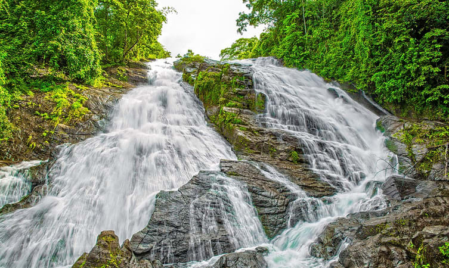
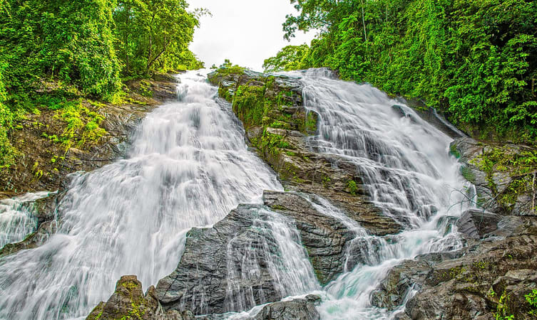

Athirappilly waterfalls
On the outskirts of the city at a distance of some 60 km, the Athirappilly waterfalls mark one of the best places to visit in Thrissur. Standing 80 ft tall and about 330 ft wide, these falls are the largest in the state of Kerala.The majesty of this place can be understood by the fact that the falls are located on the Chalakudy River, that originates from the highest mountain in India outside of the Himalayas. A perfect place for a group outing, these falls are sometimes called the Niagra of India

Punnathur Kotta
Not so far away from the Guruvayoor Temple lies one of the best Thrissur tourist places. An Elephant Sanctuary, the Punnathur Kotta was initially a palace belonging to a local ruler. It was then converted to a house of elephants and now has the highest number captive elephant, about 59 of them.

The Dolours Basilica
The Dolours Basilica, or the Basilica of Our Lady of Dolours (as the full name goes), is a distinct building in the city of Thrissur. You can easily recognize this grand church from its white facade. Smack in the middle of a lush green valley, this basilica is known for narrating quite a number of stories of love and faith. Spread in an area of about 25,000 sq feet, Dolours Basilica is the third tallest church in Asia and the largest church in the country with double storeyed aisles

Chavakkad Beach
One of the most fascinating and unexplored beaches of the state of Kerala, the Chavakkad Beach is popularly one amongst the most famous Thrissur Tourist places. Perfect for picnickers, honeymooners, and tourists of all sorts, the golden sand of the beach is what at the tracts people from all corners of the country.

Kerala Kalamandir
A University of Art and Culture, Kerala Kalamandir is a Government of India recognized institution dedicated to providing learning in the many performing arts native to India. Their main focus has always been on the arts that have been developed in Southern India.
Thrissur- the land of Poorams
The cultural capital of Kerala, the Poorams or temple festivals in Thrissur draw in thousands of people every single year as these carnivals encapsulate every single part of Kerala's rich heritage. These are a hotbed of folk art performances and heritage tours that will give you an in depth look into some of the grandest traditions of the State. From majestic elephants to colourful pulikali processions to the world renowned Thrissur Pooram, there is always a festive atmosphere in the air. The district is also the abode of several cultural centres like Kerala Kalamandalam, Sahitya Academy and the Sangeetha Nataka Academy. Thrissur is a place one must visit at least once in their lifetime. The people, swaying with the beats of the chenda, shall help you understand the true heart and spirit of Kerala.
 
